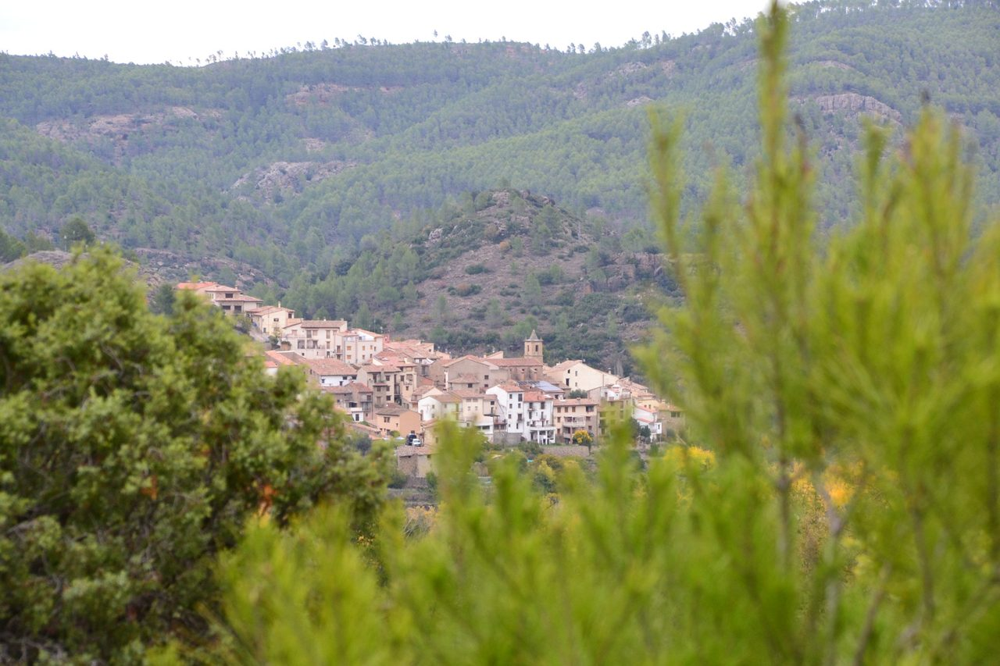

Quién soy
Quién hay detrás de L'Abelluco
Actualmente, L'Abelluco lo forma una sola persona: yo, Mario Escuder. Además de este proyecto, soy profesor de secundaria.
Soy ingeniero informático y técnico superior en gestión forestal y del medio natural. Me he formado también como educador ambiental y en permacultura, agricultura ecológica y herramientas SIG.
Vivo en Olba, en el valle del Mijares, en la comarca de Gúdar-Javalambre (Teruel). Desde aquí uno dos cosas que a menudo van por separado: las herramientas digitales y el cuidado del territorio.

Mi visión
Creo que el territorio necesita gente que lo conozca y lo cuide, y que hay que mirarlo como un todo: el bosque, el agua, los cultivos, el paisaje y las personas que viven en él.
Por eso combino la gestión del medio natural, que lo cuida con criterios ecológicos, y la educación ambiental, que ayuda a entenderlo, valorarlo e implicarse en él.
La tecnología es una herramienta más, no el centro: pequeña, útil y fácil de entender, sin hacer depender a nadie de una gran plataforma. Los datos abiertos, los mapas y las apps pueden ayudar a tomar mejores decisiones si se hacen junto a quien vive allí.
Transparencia
Decálogo sobre el uso de la IA
Uso inteligencia artificial en parte de mi trabajo. Estos son los compromisos con los que lo hago.
-
Lo digo claramente
Uso la IA y no lo escondo, ni en la web ni en los proyectos.
-
Me plantea un dilema
Por el consumo de energía, por los derechos de autor, por la concentración de poder y por su efecto sobre el trabajo de muchas personas. No tengo la respuesta, y por eso hago un uso medido.
-
Un uso equilibrado y consciente
La uso cuando aporta de verdad, no por costumbre ni para ir más rápido a cualquier precio.
-
No sirve para todo
La aprovecho para tareas concretas: escribir y revisar código, documentación, traducciones o borradores de textos y materiales. No la uso para sustituir el conocimiento del territorio, el trabajo de campo ni el trato con las personas.
-
Las decisiones son mías
Qué se hace, para quién, cómo debe funcionar y cómo debe ser: las decisiones creativas y estratégicas las tomo yo.
-
Superviso y valido todo lo que hace
Reviso todo lo que hace: leo y pruebo el código con casos reales, compruebo los cálculos y los datos, y corrijo los textos antes de darlos por buenos.
-
Respondo yo
El resultado es responsabilidad mía. Si algo falla, detrás hay una persona que lo arregla.
-
Tus datos, con permiso
No paso datos personales ni confidenciales de un cliente a ningún servicio de IA sin su consentimiento.
-
Software libre, siempre que se puede
Cuando el proyecto lo permite, el código se publica con licencia libre y cualquiera puede revisar qué hace y cómo lo hace.
-
Un decálogo vivo
La IA cambia deprisa. Revisaré estos compromisos siempre que haga falta, y lo haré aquí, en abierto.